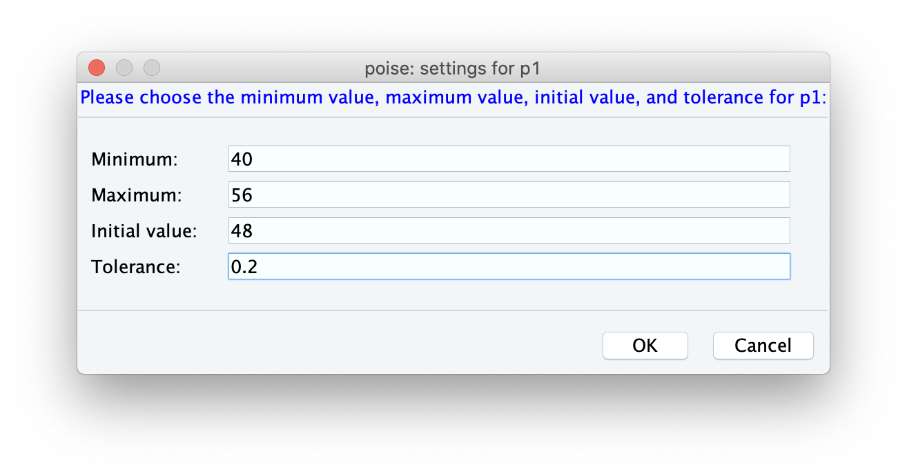
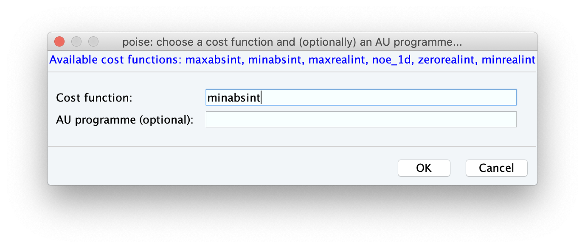

Setting up a Routine¶
If you’re coming here from the Installation, you should make sure that POISE has been installed correctly.
A simple check is to type in poise -l into the TopSpin command line: if it shows a text box, then you should be good to go.
Each optimisation in POISE is controlled by a routine, which contains all information necessary for an optimisation. The ingredients of a routine are:
A name
The parameters to be optimised
Lower bounds, upper bounds, initial values, and tolerances for each parameter
A cost function which determines the ‘badness’ of a spectrum
(Optional) The name of an AU programme for acquisition and processing
We will now walk through how to set a routine up, elaborating on each of these ingredients as we come to them.
To get this process started, type poise into the TopSpin command line.
Note
POISE has a number of command-line options. If you’re interested in finding out more about these, poise -h will give you a short summary of each of them, and Frontend options has additional info.
The routine we will set up now is one for the calibration of the 360° pulse width.
The first ingredient we need to provide is a name.
I’ve used p1cal for this, but of course you can choose anything you prefer:
After clicking OK, you will be prompted to provide the parameters that are being optimised.
Here we are just optimising one parameter, p1.
Note
Only parameters that take on float values can be optimised (pulses p, delays d, constants cnst…) Integer values, like td or loop counters l, will not work.
At this stage, you will be prompted to enter the bounds, initial value, and tolerances. The lower and upper bounds simply reflect a range within which the optimum can reasonably be assumed to lie within, and the initial value should be your best guess at where the optimum is.
On the spectrometer we’re currently using, the Prosol value for a 90° pulse is 12 µs, so we’ll go ahead and set the initial guess for the 360° pulse to be 48 µs. (If your Prosol value differs, you should adjust these values accordingly.) The lower and initial bounds can be 40 and 56 µs respectively, corresponding to a 90° pulse of between 10 and 14 µs. The tolerance, on the other hand, roughly reflects the degree of accuracy that you want in the answer. Here we’ve used a value of 0.2 µs.
Choosing tolerances can be tricky sometimes. Too large a tolerance can lead to inaccurate answers (as the optimisation converges before it’s really found the minimum); and too small a tolerance is meaningless, as often the resulting spectra are barely different. Generally, it’s a good idea to choose the smallest value where going in either direction will give you an appreciable difference in the spectrum. However, it doesn’t have to be too precise: as long as you aren’t off by an order of magnitude POISE will still work reasonably well.
Note
The default TopSpin units for pulse lengths are microseconds, so the unitless 48 is equal to 48 µs. However, for delays the default units are seconds.
POISE also allows you to specify units using the suffixes ‘u’, ‘m’, and ‘s’ for microseconds, milliseconds, and seconds respectively. This is designed to mimic TopSpin’s parameter settings, where 30m means 30 ms (for example). So you can enter 48u in this screen as well, or indeed 0.048m.
Finally, we have to choose a cost function, as well as (optionally) an AU programme.
The cost function is a Python function which reads the spectrum and returns a ‘cost’, i.e. how bad the spectrum is.
All optimisations in POISE seek to minimise the cost function.
In our case, the best value of p1 is one for which the intensity of a pulse-acquire spectrum (zg) is minimised, i.e. magnetisation is returned to the positive z-axis.
So, we can conveniently use the intensity of the magnitude-mode spectrum as the cost function.
This cost function is also bundled with POISE, and is called minabsint.
(For those who are familiar with TopSpin’s built-in popt, this is equivalent to the MAGMIN criterion.)
Note
For more information about the built-in cost functions, check out Builtin cost functions.
The AU programme controls spectrum acquisition and processing, and can be left blank in this case. All we need to do for this routine is to acquire the spectrum, Fourier transform, then perform phase and baseline correction. For 1D and 2D datasets, if the AU programme option is left blank, POISE will automatically do exactly these steps. Therefore, there is no need to specify an AU programme unless you want to customise this process.
That’s it — congratulations, you’ve set up a POISE routine!
If you type poise -l now, you should now see the p1cal routine (or whatever you named it) appear in the text box: